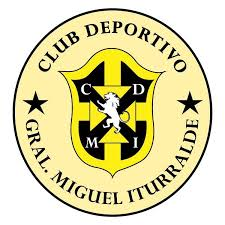

Educación Primaria y Secundaria
Cursé mis estudios en la Escuela Militar General Miguel Iturralde II, ubicada en Tumbaco. Esta etapa fue clave para desarrollar valores como la disciplina, el respeto y el trabajo en equipo.
A lo largo de mi formación académica he adquirido conocimientos tanto en el ámbito técnico como empresarial. Actualmente estudio la carrera de Negocios Digitales en la Universidad Politécnica Salesiana.
Cursé mis estudios en la Escuela Militar General Miguel Iturralde II, ubicada en Tumbaco. Esta etapa fue clave para desarrollar valores como la disciplina, el respeto y el trabajo en equipo.
En mi carrera universitaria me enfoco en el desarrollo de proyectos digitales, la innovación y la creación de negocios en línea. Aprendo herramientas tecnológicas que fortalecen mi formación profesional.
Además de mis estudios universitarios, complemento mi aprendizaje con cursos y talleres prácticos:
Mi meta principal es culminar mi carrera universitaria con excelencia, generar proyectos innovadores y crear oportunidades de empleo a través de la tecnología.